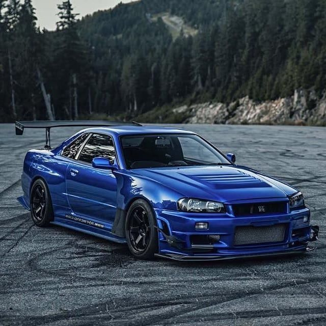
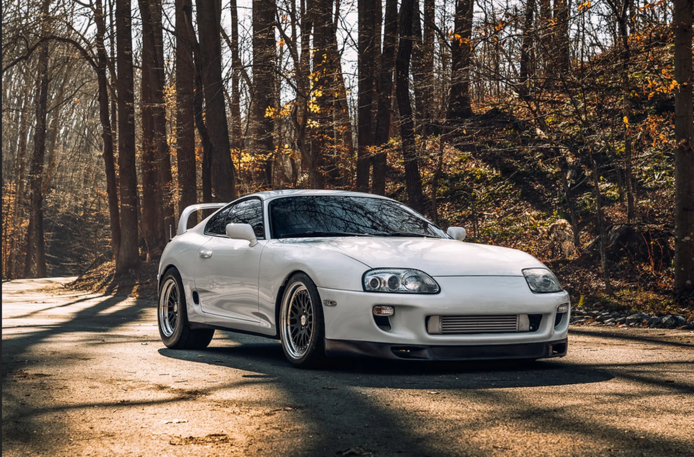
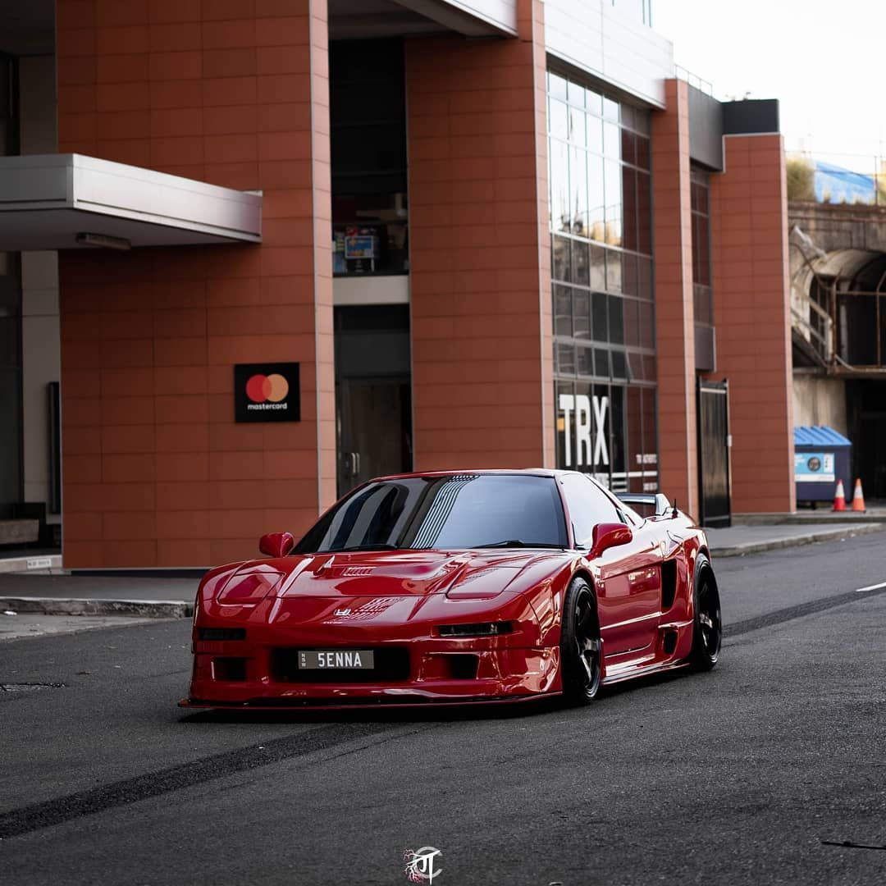

El Nissan Skyline GT-R encabeza la lista con razón. Equipado con la tecnología más avanzada de su época, su velocidad y maniobrabilidad inigualables lo han convertido en un ganador habitual en los circuitos de carreras. Y su papel protagónico en las películas “Rápidos y Furiosos” lo convirtió en un ganador con turbofans.Con el tiempo, la gama de automóviles Nissan Skyline GT-R se ha convertido en uno de los autos deportivos más famosos del mundo y en una parte indispensable de cualquier colección de automóviles seria.


El Toyota Supra ha sido durante mucho tiempo un digno contendiente en la lista de “lo mejor de” de JDM. El Mk4 de cuarta generación (A80) saltó al estrellato y se convirtió en uno de los favoritos de los fanáticos de todos los tiempos cuando apareció en la franquicia de películas “Rápidos y Furiosos”.Aunque dejó de producirse en 2002, el Supra Mk4 sigue siendo muy apreciado por los entusiastas de los automóviles en la actualidad. El cupé de 2 puertas cuenta con 280 hp, una carrocería aerodinámica y una transmisión Getrag de 6 velocidades que hacen que conducirlo sea un placer increíble.
Puede resultar difícil de creer, ¡pero el Mazda RX-7 se fabricó por primera vez en 1978! Desde entonces, tuvo varias modificaciones y finalmente dejó de producirse en 2002. Durante su vida, se hizo famoso al protagonizar varios juegos de computadora y películas como “Gran Turismo” y “Need for Speed”. Hoy en día es difícil encontrarlo, pero sigue siendo uno de los coches japoneses más queridos de todos los tiempos.El RX-7 fue el desafío de Mazda a los modelos de alta tecnología de Nissan y Toyota. Lo que realmente lo distinguió fue su diseño liviano y elegante, combinado con un motor de rotor turboalimentado 13B-REW compacto pero potente. También ofreció un bono financiero. La cilindrada del motor rotativo es inferior a 1,5 litros, lo que lo hace más eficiente en combustible que los motores en línea tradicionales.

Con el Honda NSX, crearon un auto deportivo legendario que pasa de 0 a 100 km/h en menos de tres segundos, alcanzando un máximo de 300 km/h. Con una carrocería y un chasis de aluminio, bielas de titanio, un motor de 8.000 rpm y muchas más innovaciones, este definitivamente no es el típico coche urbano.Impulsado por motores C30A y C32B, el Honda NSX estuvo en producción de 1990 a 2005. Conocido como Acura NSX en el mercado estadounidense, es recordado por los fanáticos del cine de todo el mundo por la popularísima película "Pulp Fiction". Y sigue siendo una opción popular para los amantes de los coches clásicos y deportivos.
El Subaru Impreza WRX es otro ícono mundial de los rallyes, Subaru adoptó las iniciales “WRX” para significar “World Rally eXperimental”. Cuenta con tecnología inspirada en los rallyes, un potente motor de cuatro cilindros turboalimentado de 271 hp y brinda una experiencia de conducción verdaderamente dinámica. El WRX comenzó a producirse en 1992 y sigue vivo en el WRX STI actual.